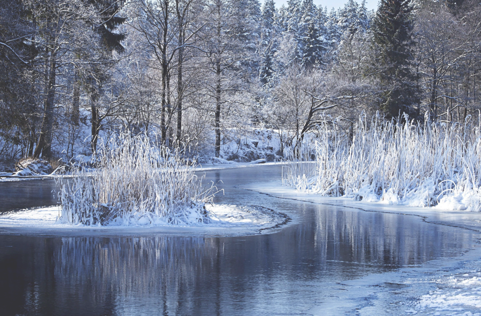
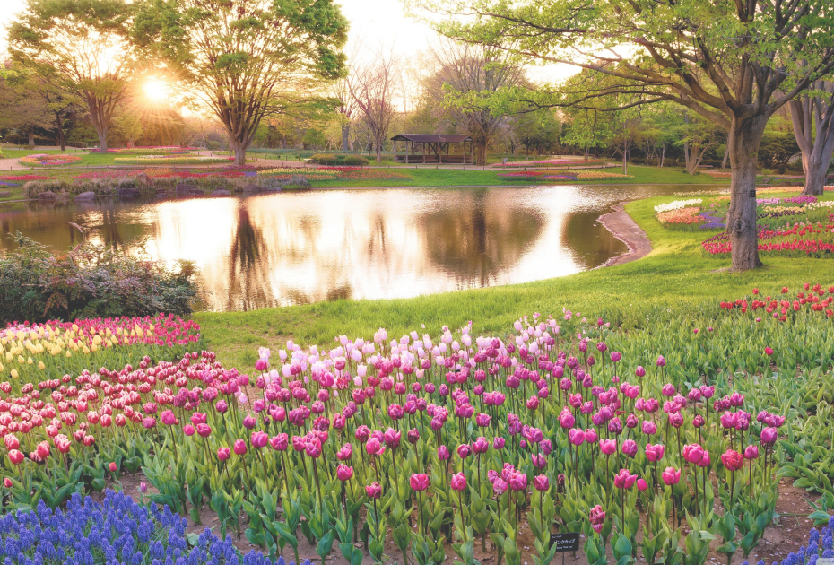
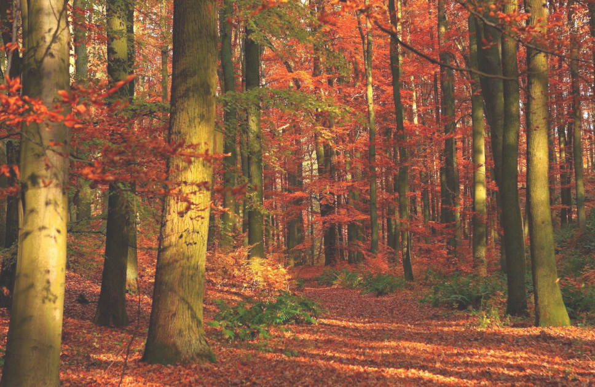

Зима— одно из четырёх времён года, между периодами годового цикла осенью и весной.
Основной признак этого времени года — устойчивая низкая температура (ниже 0 градусов по Цельсию) во многих районах Земли, на поверхность земли выпадает и ложится снег.

Весна — одно из четырёх времён года, переходный сезон между зимой и летом. Существуют различные методы определения начала и окончания весны, отличающиеся в зависимости от местного климата, культур и обычаев.

Лето— одно из четырёх времён года, между весной и осенью, характеризующееся наиболее высокой температурой окружающей среды. В день летнего солнцестояния дни самые длинные, а ночи самые короткие.
Дата начала лета варьируется в зависимости от климата, традиций и культуры.
Осень— одно из четырёх времен года, между летом и зимой, переходный сезон, когда заметно уменьшение светового дня, и постепенно понижается температура окружающей среды.
